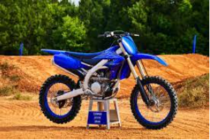

TOP Motos
Honda: CRF450
La moto Honda CRF450R de l'any 2022 va ser creada per l'empresa Honda i entra a la sèrie d'Honda crf 450 que comprèn models de diverses cilindrades.
Aquesta moto correspon a la categoria de cross/motocross el primer model d'aquesta generació de les Honda crf 450 es va comercialitzar l'any 2002, per la qual cosa encara que no ho sembli, estem davant d'una generació de motos que ja té 20 anys.
Abreujant les especificacions d'aquesta moto, dir-te que té una cilindrada de 449.7 cc i una potència total de 53.0 cv a 9000 rpm en un motor mico cilíndric, 4 temps amb arrencada elèctrica.
Quan aquest model es va difondre, estava disponible en el color Vermell únicament.
Preu: 9.550€
Yamaha: YZ125
La moto Yamaha yz125 de l'any 2018 va ser manufacturada per l'empresa Yamaha i entra a la sèrie de Yamaha yz que abasta models de diferents cilindrades.
Aquesta moto entra a la categoria de cross / motocròs i el primer model d'aquesta generació de les Yamaha yz es va començar a vendre al particular l'any 1987, per la qual cosa tenim davant una generació de motos que ja té 35 anys.
Per resumir-te una mica les característiques d'aquesta moto, dir-te que té una cilindrada de 124.00 cc en un motor monocilíndric,2 temps amb arrancada arrancada de peu.
Preu: 7.399€

KTM: 690 SMC R
La moto Ktm 690 smc r va ser manufacturada per l'empresa Ktm i entra a la sèrie de Ktm 690 smc que engloba models de diferents cilindrades.
Aquesta moto és de la categoria de super motard i el primer model d'aquesta generació de les KTM 690 smc es va començar a vendre al particular l'any 2008, per la qual cosa encara que no ho sembli, estem davant d'una generació de motos que ja té 14 anys.
Per resumir-te una mica les especificacions d'aquesta moto, dir-te que té una cilindrada de 690.00 ccy una potència total de 67.00 cv en un motor monocilíndric, 4 temps amb arrencada arrencada elèctrica.
Preu: 10.349€
Kawasaki: Z900
La moto Kawasaki Z900 va ser llançada al mercat per l'empresa Kawasaki i entra a la sèrie de Kawasaki z900 que engloba motos de diferents cilindrades.
Aquesta moto pertany a la categoria de naked i el primer model d'aquesta generació de les Kawasaki z 900 es va començar a vendre al particular l'any 1975, pel que fa referència a una generació de motos que ja té 47 anys.
Abreujant les característiques d'aquesta moto, dir-te que té una cilindrada de 948.0 cc i una potència total de 125.00 cv a 9500 rpm en un motor de quatre cilindres en línia, 4 temps amb arrencada arrancada elèctrica.
Preu:10.199€